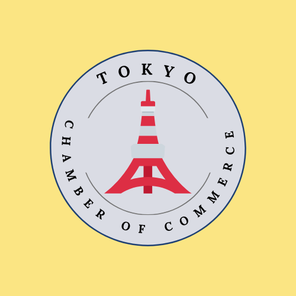
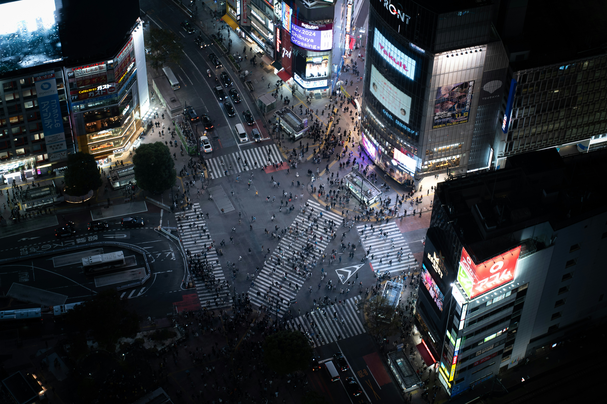

Tokyo Chamber of Commerce
Home
Discover
Directory
Join
🌞
🌙
Tokyo Chamber of Commerce
Tokyo Demographics
Population: 13.96 million (2022)
Area: 2,194 km² (847 sq mi)
Density: 6,363/km² (16,480/sq mi)
Major Industries: Technology, Finance, Media
GDP: $1.6 trillion (2021)
Welcome to Tokyo
Welcome! Let us know if you have any questions.
Number of Visits:
0
Discover Tokyo
Iconic Tokyo Skyline at Sunset

Shibuya Crossing: World's Busiest Intersection
Tokyo Tower: Iconic Landmark
Asakusa Kaminari-mon
Tokyo Dome
Tokyo Station

 Asakusa Kaminari-mon
Tokyo Dome
Asakusa Kaminari-mon
Tokyo Dome
 Tokyo Station
Tokyo Station